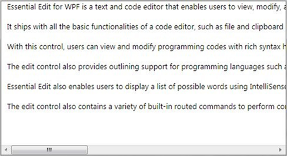
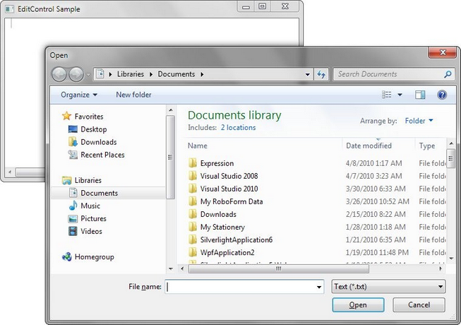
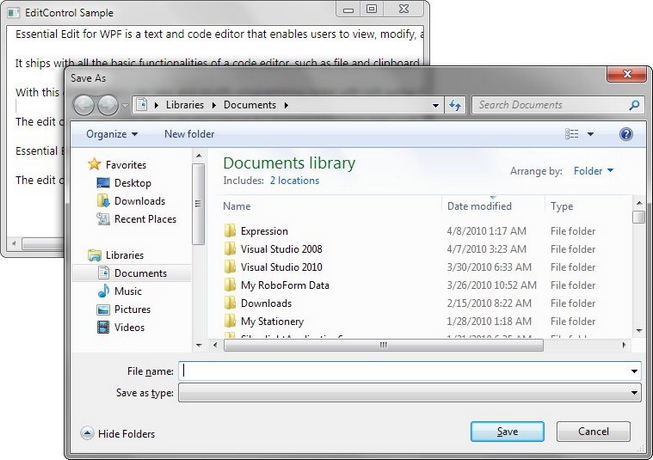

Essential Edit WPF facilitates the users to create, open, modify and save text files and programming language files. EditControl provides built-in support for a variety of text based file formats such as txt, cs, vb, sql, xaml and xml. It also enables the users to specify custom file types in the custom language configurations.
Open a file
DocumentSource property of EditControl is used to specify the file to be opened with EditControl. The following code can be used to set the DocumentSource property.
|
[XAML] <syncfusion:EditControl x:Name="editControl1" DocumentSource="C:\MyFile.txt" ShowLineNumber="False" EnableOutlining="False"/> |
|
[C#] editControl1.DocumentSource = @"C:\MyFile.txt"; |

Figure 11: EditControl displaying contents from file set as DocumentSource
Files can also be opened using the LoadFile method. LoadFile method displays a FileOpenDialog to enable the users choose the file that needs to be opened in the EditControl.
|
[C#] editControl1.LoadFile(); |

Figure 12: FileOpenDialog
Save the text in a file
SaveFile method in the EditControl class is used to save the text in EditControl to a file. EditControl does support saving all the built-in languages’ file types and custom language file type respectively.
Enable save file, by using the following code.
|
[C#] editControl1.SaveFile(); |

Figure 13: SaveFileDialog